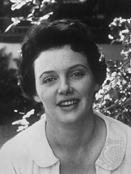

Exploring the Piazza dell’Arte: Jean Collins Kerr
In our continuing series exploring the lives and works of the artists featured on the Piazza dell’Arte at Scranton’s Courthouse Square, we will profile author and playwright Jean Collins Kerr.
Jean was born Bridget Jean Collins on Electric Street, Scranton, on July 10, 1922. She would go on to attend Marywood Seminary. Her time at Marywood would inspire her to write the short story “When I was Queen of the May.”
She graduated from Marywood College with a Bachelor’s Degree and went on to The Catholic University of America where she received her Masters. It was at The Catholic University of America that she met then-professor Walter Kerr, a writer himself and later a Pulitzer Prize winner for his drama criticism. She eventually married Kerr, moved into a home in Larchmont, N.Y., and had six children.
The Kerrs’ artistic collaboration began in 1949 with “Touch and Go,” written by Jean and continued with the Tony Award-winning “King of Hearts” in 1954 which Jean wrote and Walter directed during its initial run.
Together, Jean and her husband Walter wrote Goldilocks, a Broadway musical comedy about the early days of silent film that opened in 1958. Goldilocks earned five Tony nominations and two wins.
The struggles involved with creating a new musical in several of her books, including her most popular book “Please Don’t Eat The Daisies,” as well as “The Snake Has All the Lines” and “Penny Candy.”
“Please Don’t Eat the Daisies,” published in 1957, features humorous essays about suburban life and raising children; it quickly became a best seller. In 1960, the book was adapted into a film starring Doris Day and David Niven and that film was adapted into a television series that ran from 1965-67.
Jean’s success in theater would continue with her play “Mary, Mary,” which opened in 1961, ran for over 1,500 performances and held the record for the longest-running non-musical play on Broadway. In 1963, “Mary, Mary” was adapted into a film.
She died in White Plains, N.Y., of pneumonia on January 5, 2003, after writing numerous best-selling books collected from her magazine essays about family life. Her final play was produced in 1980, “Lunch Hour.”
Spiritual Heir: Maureen McGuigan. McGuigan has not only been a prolific local playwright but, like Kerr, has dedicated herself to supporting the arts in any capacity. Through the former Northeast Theatre (now the Electric Theatre), McGuigan contributed her “Reveries of Shanty Hill” to the “Lackawanna Rails: 100 Years of Life in the Anthracite Valley” production in the 2004-05 season. Her play “Six Women in Labor” explored the roles of women in the Northeastern Pennsylvania workforce with a focus reminiscent of Kerr. McGuigan now acts the Deputy Director of Arts and Culture for Lackawanna County. Recently helping to name the county’s Council on Arts, Culture and Education.
This article was part of a series that explored the lives and legacies of the artists featured on the Piazza dell’Arte at Courthouse Square, Scranton. It first appeared on Electric City Renaissance. Read the rest of the series.